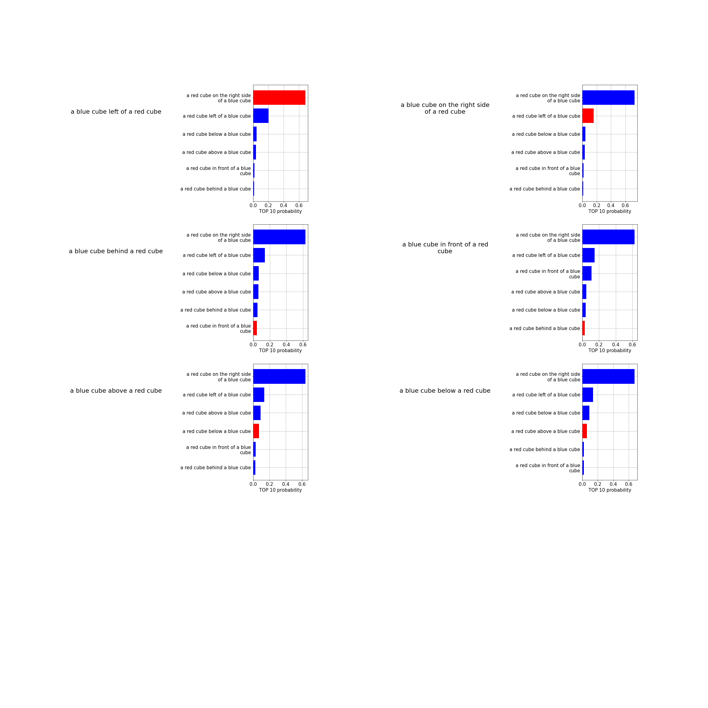

Here, we investigate how well the CLIP can tell the relation property between objects.
Note that on synthentic data, it doesn't perform well, so we test whether it works on natural images.
Note: Red bar means the corresponding ground truth.
Here, we compare every pair of text features to investigate how good the CLIP embedding is. For example, "a red cube on the left of blue cube" should match "a blue cube on the right of a red cube".
Since the semantic meaning should remain the same when we flip the relation and object descriptions.
Here, we investigate how good the CLIP embedding is in terms of matching described objects. We don't use any relation here but just simply object description.
simple object compounds description seem easy for CLIP without specifying relation.